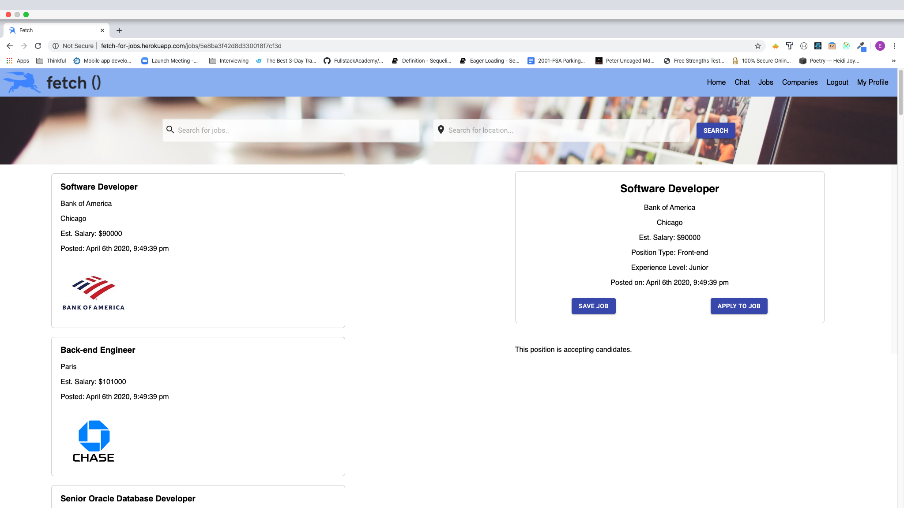
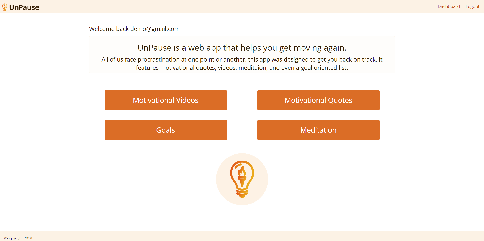

Projects
Projects

Fetch is a mobile-responsive job board for software engineers at the intersection of technology with other industries.

UnPause is a web app that helps you get moving again. All of us face procrastination at one point or another, this app was designed to get you back on track. It features motivational quotes, videos, meditaion, and even a goal oriented list.